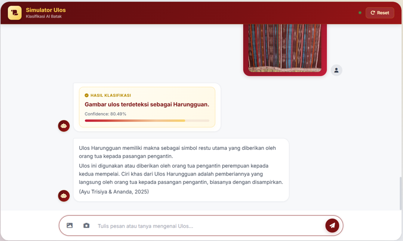
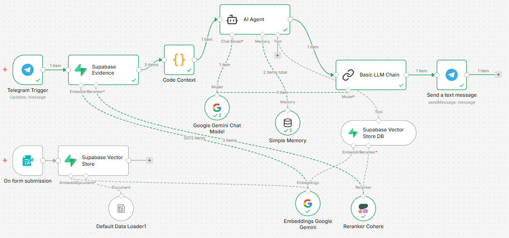

Terbuka untuk Peluang Kerja
Lenna Febriana
Lulusan Sistem Informasi dengan spesialisasi pada Data Science, Business Intelligence, serta Deep Learning (Computer Vision & RAG)
Lulusan Sistem Informasi dengan spesialisasi pada Data Science, Business Intelligence, serta Deep Learning (Computer Vision & RAG)
Proyek AI & Sistem Data
Associate Data Scientist Certified
Pengalaman Riset & Pengolahan Data
Saya merupakan lulusan Sistem Informasi dari Institut Teknologi Del. Memiliki minat dan keahlian mendalam dalam membangun model Machine Learning & Deep Learning (khususnya arsitektur MobileNetV2 dan RAG), analisis data bisnis, serta otomatisasi alur kerja sistem menggunakan n8n. Pernah berpengalaman sebagai Business Intelligence Intern di PT Telkominfra serta aktif memimpin organisasi mahasiswa (BEM) menjadi mantan ketua divisi bilateral di DHPM (Departemen Hubungan dan Pengabdian Masyarakat).
Memiliki pengalaman dalam klasifikasi citra, fine-tuning model deep learning, serta penerapan arsitektur CNN
Pengembangan RAG terintegrasi LLM dengan Supabase Vector Store & Cohere Rerank untuk jawaban berbasis fakta.
Perancangan pipeline otomatisasi terhubung Django, AI Agent, database, dan rantai evaluasi terstruktur.
Pemodelan data analitik, clustering, klasifikasi statistik, dan pembersihan data berbasis sertifikasi BNSP.
Pembuatan prototipe antarmuka UI/UX di Figma, konseptualisasi logo, serta penyusunan slide presentasi Canva.
Penyusunan tata letak dokumen akademik, rekapitulasi data, dan laporan resmi.

Sistem klasifikasi motif Batak Toba menggunakan MobileNetV2 yang diintegrasikan dengan arsitektur RAG untuk edukasi budaya yang akurat.

Merancang dan mengimplementasikan alur kerja otomatisasi end-to-end menggunakan n8n Workflow Engine untuk menghubungkan antarmuka Telegram, AI Agent, dan sistem evaluasi otomatis (LLM-as-a-Judge).

Pengembangan sistem dashboard interaktif berbasis visualisasi data untuk membantu PT Telkom Infrastruktur Indonesia menentukan arah dan sudut kemiringan terbaik bagi panel surya di wilayah Jakarta Selatan.
BNSP & Komdigi (VSGA)
Sertifikasi kompetensi nasional dalam pemrosesan data, pemodelan statistik, machine learning dasar, analisis data berbasis RapidMiner & Python, serta visualisasi data.
Business Intelligence Intern
Pemrosesan data bisnis, pembuatan dashboard interaktif, analisis tren data, visualisasi data, serta penyusunan laporan strategis untuk pengambilan keputusan bisnis.
Educational Testing Service
Sertifikasi kemahiran bahasa Inggris mencakup evaluasi Listening Comprehension, Structure & Written Expression, dan Reading Comprehension.
Departemen Hubungan & Pengabdian Masyarakat (DHPM)
Penghargaan atas kepemimpinan, koordinasi hubungan mahasiswa dan masyarakat, serta pengawasan program kerja strategis divisi.
Palang Merah Indonesia (PMI)
Sertifikat apresiasi atas partisipasi aktif dalam kegiatan sosial kemanusiaan donor darah secara sukarela untuk mendukung ketersediaan stok darah nasional.
Tertarik untuk berkolaborasi dalam pengembangan AI, analisis data, otomatisasi alur kerja, atau membutuhkan layanan profesional? Saya selalu terbuka untuk diskusi proyek, peluang karier, maupun kerja sama lepas.
+62 822-1064-2113
Lenna Febriana Hutapea
Lihat Repositori & Proyek